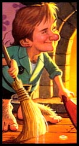

Shipy the Cunning
Shippy the Cunning
Yahoo! id: hobbit_king
Hobbit Rogue 8th Level
70,000 Adventure Points
Skill Points: 21 (INT:13 + Level 08)
Stat. Points: 14 (14 possible)
CON: 09 SPD: 10 INT: 11 ESS: 14 \-'Original 3d6'
STR: 14 DEX: 11 CHR: 10 LCK: 11/
---------------------------------------------
CON: 19 SPD: 10 INT: 11 ESS: 14 \-Kindred Mods.
STR: 09 DEX: 16 CHR: 10 LCK: 11/
---------------------------------------------
CON: 25 SPD: 10 INT: 13 ESS: 14 \-Current
STR: 09 DEX: 18 CHR: 12 LCK: 13/
---------------------------------------------
|

|
Melee Modifiers: +07
Ranged Modifiers: +07
Magickal Modifiers: +16
Combat Bonus : +09/+09
Weight Possible : 700
Weight Carried : 660
Kindred Ability : Dowse Traps
Languages Spoken
: Hobbit
(+ Literate)
: Common Tongue
(+ Literate)
: Dwarf
? (+ Literate)
: Elf
? (+ Literate)
Skills-
* Covert Action Bonus +08
-------------------------
Combat : 07| Staff Sling R 03
..............| Bladed Combat (Swords) R 04
Covert : 05| Lock Manipulation R 05
General : 03| Disable Trap R 03
Athletics : 02| Tumbling R 02
================================
NATIONALITY & PLACE OF RESIDENCE: Khazan,
ARMOR:
* Leather Armor (Weight 200, Cost 50, Hits Taken 2d-01.)
SHIELD:
* Buckler (Weight 75, Cost 10, Hits Taken 1d.)
WEAPONS:
* Staff Sling 3 dice +16 (Weight 100, Cost 8, Range 150 yards, Requires two
hands to use.)
* Short Sabre 3 dice + 1 +16 (Weight 30, Cost 40, Length 2 feet.)
EQUIPMENT: clothes, backpack, provisions 3 days, 1 water skin 2 days, short
sabre, buckler, leather armor, sling staff, belt, lockpicking tools, 30 feet
of silk rope, 1 piton hammer, 10 pitons, 100 stones (wt. 50), Mr. Beezer's
"toof" (on a string), naked picture of Desuma, a book entitled D'Nali
containing a gateway to Lennoxa, Bela's homeworld.
TREASURE: 0 Gold, 78 platinum dragons, 1 bent silver, (5) - Healing potions
(heals 3d6)
home |
Page modification date: